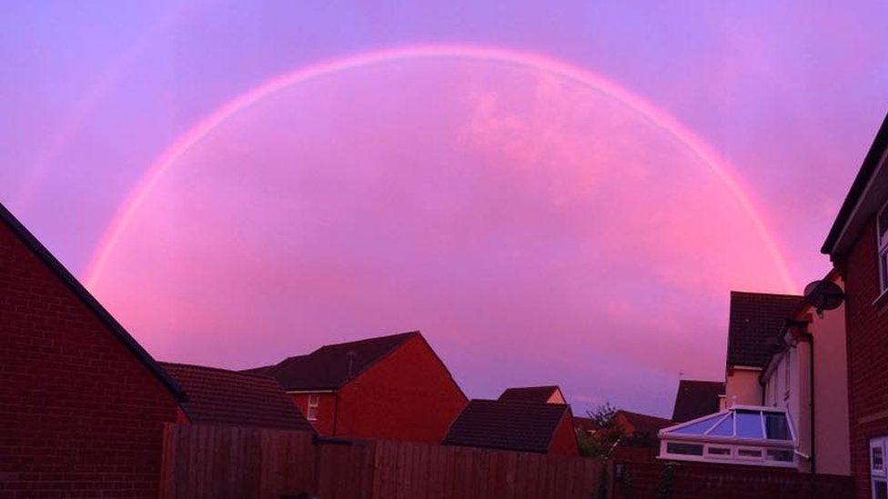

About Us
This is a rebranding project by Anupama and Fatima for DE Web Page Design and MultiWeb.

Our Mission
We hope to let people learn more about the color pink and where it came from and all things pink!
The color pink
The color pink originated as a concept in 800 B.C. in Homers Odyssey.